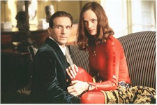
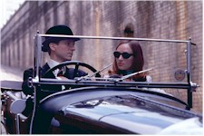

Contents | Features | Reviews | News | Archives | Store |
 |
|
| Movie Credits | Buy It! |
The Avengers
Review by Elias Savada
Posted 14 August 1998
 |
Directed by Jeremiah
S. Chechik. Starring Ralph Fiennes, Uma Thurman, Written by Don MacPherson. |
This gaudy, overwrought, and vapid update of the classic 1960s British television series suggests that director Jeremiah S. Chechik might find more suitable work as a coronary surgeon, as he has managed to cut out the vital organ that might have made this more palpable instead of creating the latest miscarriage of deadly refittings of the shows I admired in my younger days. The Avengers joins Sergeant Bilko, Car 54 Where Are You?, and Lost in Space as disastrous misconceptions in their expansion to the big screen. It’s almost like watching something assembled as a paint-by-number picture. Taking a wooden screenplay (damn you Don MacPherson), Chechik directs the wasted cast limply through their lines, plies on some rip-off James Bondian art direction and lush English countryside settings, then throws in some swirling meteorological special effects. But there’s no exuberance, no fervor that this film sorely needs, and certainly nothing creative in the direction, other than it’s pretty much straight downhill for this $70-million rock. Scenes evaporate before your very eyes. Bad puns roll off the heroes and anti-hero’s tongues and lay dead before your feet. No doubt you’ve heard that Warner Bros. decided not to pre-screen the film for the press (I caught an early afternoon show on opening day), a surefire warning that a bomb is at hand. Guess what? BOOM! Two weeks and out.
Ralph Fiennes (Schindler’s List, The English Patient) has no panache in his dull characterization of John Steed, the role made famous by dapper Patrick Macnee, who makes a brief non-appearance here as Col. I. (as in invisible) Jones. The impeccably tailored special agent joins forces with Dr. Emma Peel (Uma Thurman), a super-smart and very sexy scientist, former head of the Prospero weather shield project and onetime associate of Sir August DeWynter (Sean Connery). Yes doe-eyed Uma looks stunning in her various costumes (much as she did as Poison Ivy in Batman & Robin) courtesy of designer Anthony Powell, including a front-zipper leather-clad outfit worthy for pin-up posting (check the September issue of Starlog for just such a treat). Also look for the Audrey Hepburn look -- a pink ensemble with pearls and large ear baubles. You actually see twice as much Thurman several times in the film as the writer throws in a silly cloning project gone awry subplot for good (well, actually for bad) measure. Meanwhile, aging ex-007 looks horribly flustered with his role as a demoniacal madman holding the world hostage for 10% of its gross national product. Guess that will make him half as rich as Bill Gates. Seemingly fighting the good fight are Steed’s bosses at The Ministry, one of the clandestine government agencies holed up beneath the streets of London in dungeon-like lair: Mother (James Broadbent), a chain-smoking, wheelchair-bound, macaroon-munching bureaucrat, and Father (Fiona Shaw), a visually-impaired, black-goggled, second-in-command-but-I’ll-get-you-if-you-don’t-watch-out.
And, following in Zorro and Cinderella’s footsteps earlier this summer, The Avengers even has some swordplay, but stick with those other prior releases (The Mask of Zorro and Ever After) for more entertainment in five minutes than you’ll see over the entire (and blessedly short) 90-minutes of this sad excuse for a film.
Another problem. Sir August, already one of the richest men in the world, seems surrounded by a boardroom of men in bear suits (to hide their identities from each other!). Pink bears, yellow bears, green bears. Pooh, pooh, pooh! If he’s running this huge weather-making conglomerate, where are all the workers! Seems he’s running this whole scam by himself and a dwindling handful of associates and stooges (who bear a strange resemblance to the odious British youths in Clockwork Orange).
Then poor pretty Emma, drugged by the mad Scot, stumbles around his mansion in a hallucinogenic sequence obviously inspired, on one hand, by the work of the late Dutch artist M.C. Escher, known for his bizarre optical effects, and on the other, by a spatial distortion episode I recall from the Star Trek TV show. What else? Throw in some gyro-mechanical bees, a 17th-century love maze, a horribly bombastic score (original music by Michael Kamen and Joel McNeely), the demise of Big Ben, and a poorly edited climactic battle sequence. It’s hard to follow the action without a scorecard. My solution: don’t bother. Stay home and watch the old reruns on the tube. They may be dated -- heck some may even be in black-and-white -- but they’re a lot fresher than this new and stale myopic attempt to revisit the past.
Contents | Features | Reviews | News | Archives | Store
Copyright © 1999 by Nitrate Productions, Inc. All Rights Reserved.